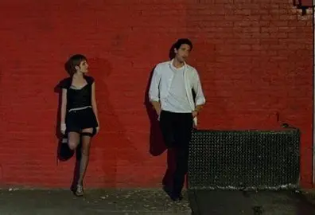
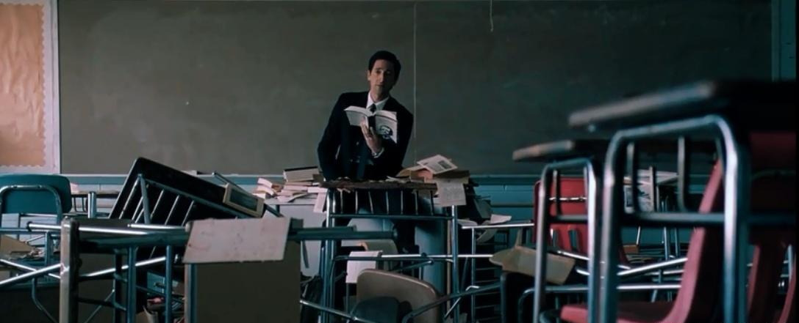

Detachment
超脱
托尼·凯耶执导、阿德里安·布洛迪主演的《超脱》，以强烈的纪实影像风格获得第 24 届东京国际电影节最佳艺术贡献奖。 影片用伪纪录片手法、大量面部特写和男主独白推进，以代课教师亨利为主线，串起他与三位女性的情感交集。
疏离
亨利是“最出名的代课教师”——代课的好处是不必和任何人建立长久关系，教一段就走。学生扔掉他的手提包，他平静地说：“那个包，没有任何感觉，是空的。我也没有任何情感能让你伤害。”童年创伤让他学会漠视：只有麻木才感受不到痛苦，但麻木之后失去了痛苦，也失去了快乐。超脱的本质，不过是保持疏离、冷漠与假装冷酷。
救赎
梅瑞狄斯把亨利的照片 P 成无脸人，“我不知道从哪个角度理解老师”。她做了白色笑脸蛋糕给别人、黑色哭脸蛋糕留给自己，最后死在校园里。亨利收留了街头少女艾瑞卡，给她食物与庇护，最终又把她送走——他的救赎只能提供帮助，却不愿建立长久、亲密、束缚的关系。正如片中的话：“我们失败了。失败的意思就是，我们让所有人失望了，包括我自己在内。”

崩塌
结尾，亨利在拆除中的教室里独自朗读爱伦·坡的《厄舍府的崩塌》。影片开头引用了加缪：“我从未如此深切地感受到，我的灵魂与我之间的距离如此遥远。”自我与现实无法割裂，完全的自由意志并不存在——人只有通过他人的眼睛，才能确认自己在世界中的存在。所以“超脱”不是解脱，它只是把真相剥开放在你面前：越感疼痛，就越发清醒。
